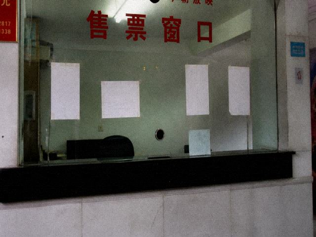

| 版块 | 主题 / 帖数 | 最后发表 | |
|---|---|---|---|
| 夜戏见闻 看过的人回来骂 | 41 / 890 | 豆皮 | |
| 吃喝 面、豆腐、不吃戏台边的 | 12 / 77 | 本地 | |
| 住宿投诉 热水、跳蚤、门牌 | 9 / 40 | 马句 | |
| 攻略 拍景，不拍后台 | 6 / 21 | 路人 | |
| 站务 停更说明 | 2 / 8 | 斑竹 |
茶馆二〇〇八年开的。现在是镜像。要看龙套那档事，进夜戏见闻。
斑竹的站务碎纸。贴在茶馆首页最底下，二〇一二年停更以后就没动过。
这馆子〇八年开的。机器是镇网吧淘汰的戴尔，显示器边上一块黄，黄的地方点不到。一〇年夏天县里网警来过电话，说版块名带神带鬼，容易被刷。斑竹连夜把「庙戏」改成「夜戏见闻」，「老郎」改成「站务」，改完过了。现在是镜像，镜像放在广州一个做装修的同学虚拟主机上，一年二十，二十块有的年没续上，没续上就打不开几天。要看龙套那档事，进夜戏见闻，豆皮那帖。别在首页发新帖，新帖发了也没人审，审的人就是我，我人在广州，瓷砖缝还没打完。吃喝、住宿、攻略那三个板是后来分的，分的时候图看着像个站，其实就那几个人在回。马句不爱在首页露脸，他有事去住宿投诉跟自己博客。本地老张只泡吃喝。路人甲发过攻略以后再没上。积分没什么用，别问怎么升级。升级按钮我一〇年就卸了。卸了省事。茶馆不是喝茶的地方，镇口那块招牌是我〇八年让贵生印的，印完没地方挂，挂在空坝，挂到现在。发帖按钮卸了。有人用手机开这页，版块名挤成一列，一列也能点进夜戏见闻。见闻里头豆皮那帖是正经要看的。看完别在首页留言。留言没人审。二十块有的年我自己垫。垫了也不开新帖。新帖没有。翻旧的。